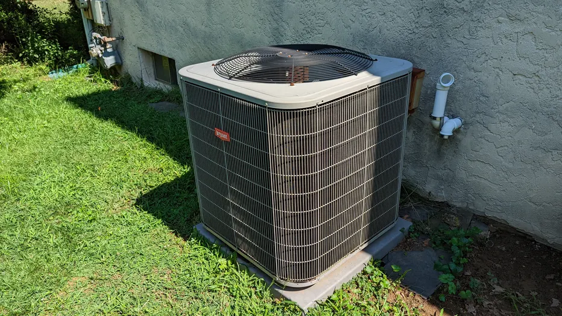
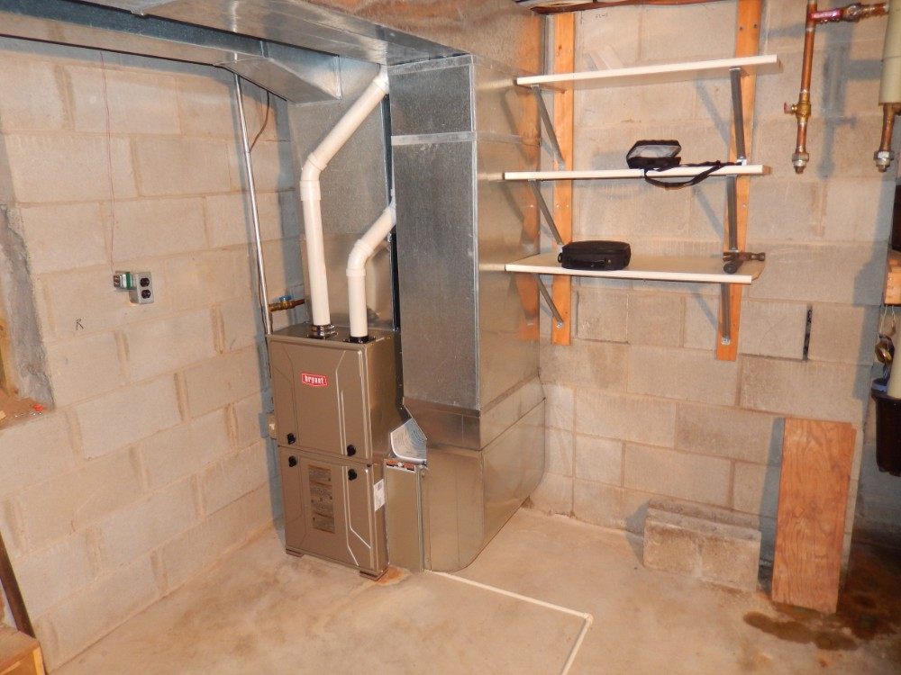

3 Essential Ways to Prepare Your AC for Summer
Published on May 15, 2025 by John D.

The summer heat is around the corner, and the last thing you want is your AC unit failing on the hottest day. Regular maintenance is key to avoiding costly repairs and ensuring peak efficiency. Here are the three most important steps you should take now:
- Clean or Replace Your Air Filter: A dirty filter restricts airflow, forcing your system to work harder and wasting energy.
- Clear Debris Around the Outdoor Unit: Leaves, grass clippings, and dirt can block the condenser coils, reducing the system's ability to cool.
- Schedule a Professional Tune-Up: Our technicians can inspect refrigerant levels, clean coils, and check electrical components for optimal performance.
Furnace Safety 101: Tips for a Warm and Safe Winter
Published on October 22, 2024 by Jane S.

As temperatures drop, the furnace becomes your home's most important appliance. Safety should always be your top priority. Ensure your home is protected this winter by following these simple, yet critical, guidelines:
- Check Carbon Monoxide Detectors: Ensure they are working properly and located near sleeping areas.
- Keep the Area Clear: Never store flammable materials near your furnace, water heater, or any heating appliance.
- Inspect Vents and Flues: Ensure exhaust vents are clear of snow, ice, or bird nests to prevent exhaust buildup.